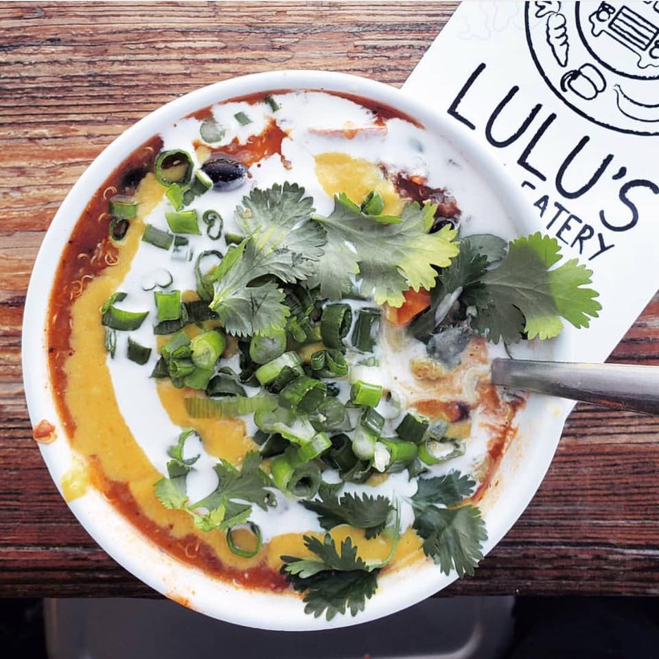
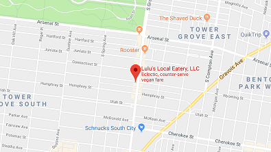

Buffalo Cauliflower Bites Buffalo Cauliflower Bites servered with a ranch dipping sauce $5.95
|

Kale Salad
Kale Salad with cranberries, shredded carrot, sunflower seeds, and maple mustard vinagerette
$6.95
|
|
Tater Tots Tots served with cajun seasoning and spicy chipotle dipping sauce $3.95
|
|
Mac N' Cheese Organic gluten-less noodles smothered in house-made butternut squash cheese sauce topped with walnut parmesan (make it chili buffalo, pesto, or nacho mac for no extra charge) $6.49
|
|

Lulu's Chili Smoky chipotle chili with qunoa sweet potatoes, onion, red kidney beans, black beans, and tomatoes topped with housemade butternut squash cheese, sour cream, green onion, and cilantro $5.95
|

Volcano Tots Tater tots smothered in lulu's chili housemade butternut squash cheese sauce, sour cream, and garnish with green onion and cilantro $5.95 Small
$8.95 Large |


3201 S Grand Ave St. Louis, MO 63118
314-300-8215 // Monday - Saturday 11:30am-9pm
ping pong bar above lulu's open all day // full bar open 5pm-12am
PURCHASE A GIFT CARD
Copyright © 2018
314-300-8215 // Monday - Saturday 11:30am-9pm
ping pong bar above lulu's open all day // full bar open 5pm-12am
PURCHASE A GIFT CARD
Copyright © 2018
